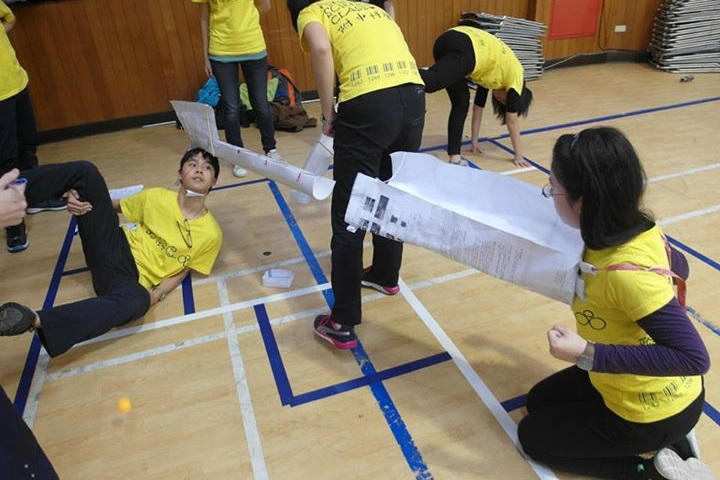
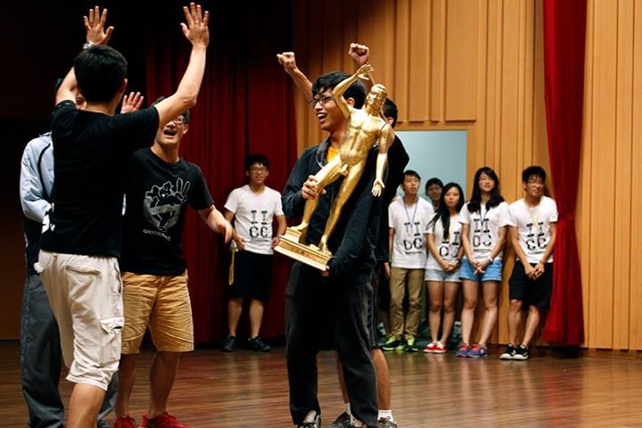
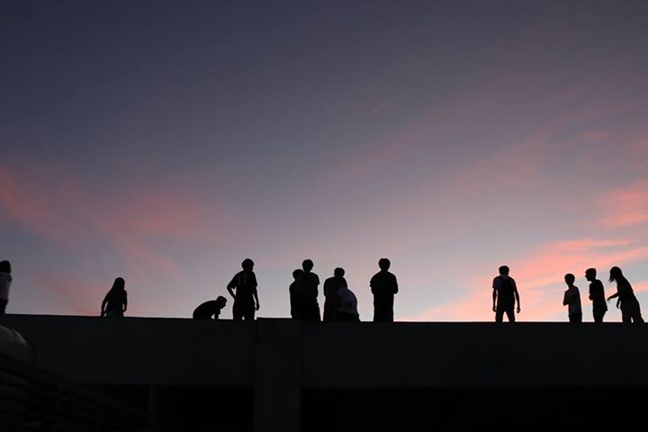
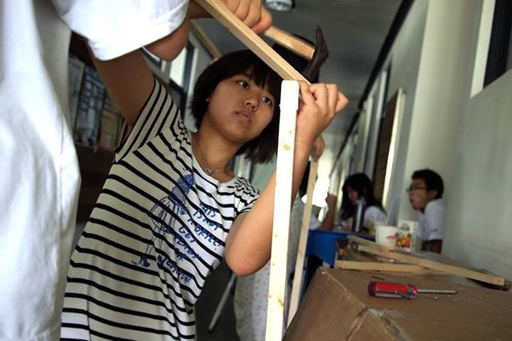
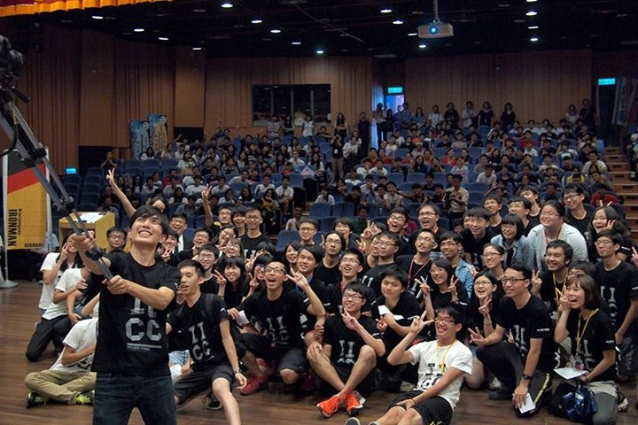
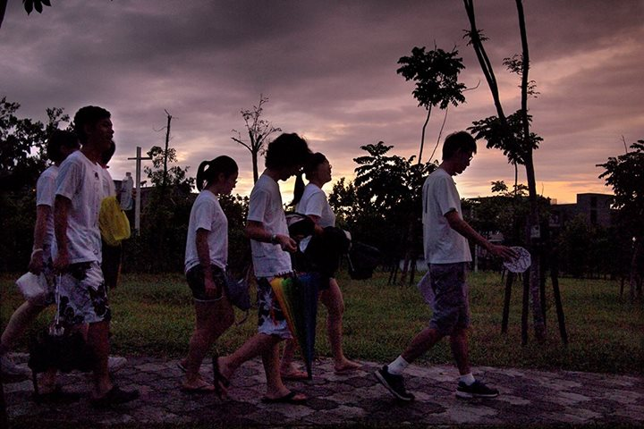
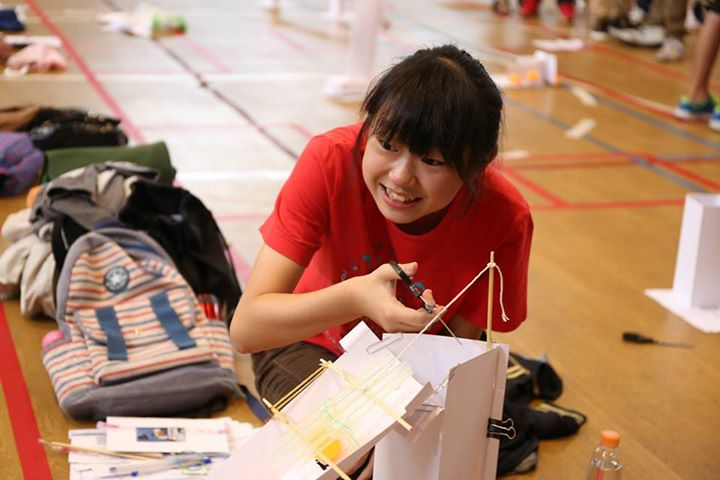

2016 智慧鐵人創意競賽
Intelligent Ironman Creativity Contest












最新消息
2015. 08. 01
決賽得獎名單
| 獎項 | 得獎隊伍 | |
|---|---|---|
| 國際組 | 冠軍 | Red “●”(新加坡) |
| 亞軍 | EE-NFS(臺南高工,臺南一中) | |
| 季軍 | Players(韓國) | |
| 國內一般組 | 冠軍 | 沒有老師帶隊之慾火重生(臺南一中) |
| 亞軍 | 還行還行(科學工業園區實驗高中) | |
| 季軍 | 子靚在紫禁城看著紫荊花和壞皇后吃著小蘋果
(科學工業園區實驗高中) |
|
| 闖關王 | 我們只是想要試試看隊名最少可以有幾個字
(衛道高中) |
|
| 創意隊呼 | 第三方程式 (台東高中) | |
2015. 07. 27
熱氣球Walk-in體驗活動
7/25下午16:30 – 19:00在國立臺東大學校區內將舉辦熱氣球Walk-in體驗活動，讓大家體驗熱氣球在球體進行冷膨脹作業時，走進球體的感覺，經由Walk-in體驗活動，相信大家會發現熱氣球除了外觀炫麗繽紛之外，內部也有令人感動的奧秘。歡迎參加，請遵守工作人員的指示，活動時程如下：
| 時間 | 活動主題 | 地點 |
|---|---|---|
| 16:30 – 17:20 | 熱氣球解說 | 圖書資訊館C108湖畔講堂
(若受天候影響,將改在運健中心室內球場G105普通教室) |
| 17:20 – 19:00 | Walk-in體驗 | 圖書資訊館北門前大草坡
(若受天候影響，將改在運健中心室內球場) |
第十三屆相關報導
2015智慧鐵人創意競賽_起跑記者會
「2015智慧鐵人創意競賽，等你來挑戰！」教育部青年發展署今(29)日召開記者會，宣布104年度智慧鐵人創意競賽於即日起開放報名！初賽第一梯次報名截止日至明年2月4日，第二梯次報名時間自明年3月30日至4月29日。複、決賽將於明年7月在臺東大學舉辦，單隊可領最高獎金達新臺幣39萬元。想挑戰自己創意、與朋友留下熱血青春回憶的全國高級中等學校在學學生，千萬別錯過
2014.12.29 智慧鐵人創意競賽_起跑記者會
「2015智慧鐵人創意競賽，等你來挑戰！」教育部青年發展署今(29)日召開記者會，宣布104年度智慧鐵人創意競賽於即日起開放報名！初賽第一梯次報名截止日至明年2月4日，第二梯次報名時間自明年3月30日至4月29日。複、決賽將於明年7月在臺東大學舉辦，單隊可領最高獎金達新臺幣39萬元。想挑戰自己創意、與朋友留下熱血青春回憶的全國高級中等學校在學學生，千萬別錯過這一年一度的盛大競賽。
為了提升青年學子的創造力，教育部長期推動「智慧鐵人創意競賽」， 12年來吸引共計有14,220隊，86,000人次參賽。青年發展署署長羅清水表示，主辦智慧鐵人創意競賽，目的在於兼顧人文與科學。智慧鐵人創意競賽就像一場真人冒險遊戲，以闖關方式進行，關卡題目結合生活、自然、人文、藝術、體育等學校所學知識，並以遊戲方式包裝，深受學生的喜愛。參賽者既須獨立思考，也要學習團隊合作。參賽者必須集結不同專長的隊友組隊，破解每道不同領域的關卡，更必須挑戰、製作前所未見的作品。
計畫主持人臺灣大學土木系教授劉格非指出，智慧鐵人創意競賽辦理12年，不僅風靡國內學生，更有來自歐、美、亞洲13個國外團隊參與這個結合作中學加上團隊合作、實踐創造力的臺灣原創比賽，是一個很好的國際交流、學習的機會。透過國際隊伍加入，希望增長臺灣學生的國際視野，也期待在不同文化背景的交流下，能激盪出有趣的創意火花。劉格非更透露這次競賽出題三大方向為國際觀、生態、環保，參賽者多多關注，必能在競賽中有好表現。
此次競賽也與企業合作，慧濟普科技公司企業總經理張德霖表示，創意思想啟蒙最佳時代就在高中時代，高中畢業進入大學後將創意思想帶入不同學科中去發展，這會是一股強大的力量，因此與競賽合作，以鼓勵更多青年學子發揮創意。青年發展署也希望能藉由這項競賽，增加青年與社會的互動與接軌，將這股創造力活水，注入企業文化。
記者會現場也邀請多位歷屆參賽者現身說法，分享參與的心得。曾獲得本競賽國際與國內冠軍、目前就讀於臺大醫學系的謝正彥同學表示，智慧鐵人創意競賽強調跨領域學習，讓他跳脫框架思考、學會尊重不同領域的專業，因此不論課業再繁忙，他都會積極參與，這幫助他學醫後面對不同病症時，較能跳脫醫學本位，與病人的溝通互動上也更加融洽。
就讀於臺灣科技大學的郭振耘同學則認為，參加的最大收穫是學到反思能力。由於競賽的每一道題目都沒有標準答案，不服輸的他，每場比賽結束後，都會再設法找出更好的解題方式，因此學會從不同角度探索問題本質。郭振耘也勉勵學弟妹：「比賽沒晉級的絕對比晉級的多，重點是學到了什麼。」他還認為，參與競賽最美好的回憶，是和隊友們坦誠面對一切成敗。
「智慧鐵人創意競賽改變了我的一生。」目前任教於臺北市雙溪國小老師丘宜訢，大學時主修科學教育，但學習成效一直不佳。加入智慧鐵人競賽出題團隊後，他發現原來換個方式，就能使教學變得有趣而實用，於是報考創造力教育研究所，以第一名成績畢業。目前丘宜訢投身於國小教育，常以生活實例引導學生，將所學知識活用，創新的教法深受師長與家長的肯定。
除了邀請歷屆參賽者分享參賽心得及賽後影響，現場亦請到第11屆亞軍隊伍北一女中畢業生與師大附中在學生代表隊模擬實際競賽闖關實況。試玩題目為「打棒球、玩台灣」，參賽者必須以打棒球方式將貼有地名的球打進該地名正確的區域，參賽者不僅球要打得好，也得熟悉全台地名。兩隊隊員分別於現場快速做好打擊器具，賽前不斷練習與立即改善打擊器具。模擬賽時，兩隊都發揮團隊合作精神，展現靈活的肢體能力，最後由師大附中在學生代表隊獲得勝利。
鐵人創意競賽於99年獲得技專校院招生委員會的認同，獲得決賽前3名的高職同學，未來在申請二技、四技二專技優甄審入學時，可增加甄審實得總分20%的優待加分比例，吸引不少高職隊伍參賽。
本屆競賽初賽分2梯次，第1梯次未晉級複賽，可報名第2梯次。每梯次有3場次提供參賽同學選擇。第1梯次競賽時間為104年3月15日、3月22日及3月29日。第2梯次競賽時間為104年5月24日、5月31日及6月7日。報名網址為 http://ironman.creativity.edu.tw。
只要是全國高級中等學校一到三年級的在學同學，都歡迎報名參賽，挑戰自己的創意。
智鐵_創新遊戲化教學活動設計研習營
為了將創造力教育落實於每個教學現場，今年度的智慧鐵人創意競賽特別規劃一整年度的培訓計畫，每個月至少辦理一場教師研習，以「跨學科創意命題」與「創新遊戲化教學活動設計」為題，並由競賽主持人臺灣大學劉格非教授以及競賽共同主持人臺灣科技大學侯惠澤教授擔任講師，與老師分享創新教學的樂趣!
2014.12.10 智鐵_創新遊戲化教學活動設計研習營
前言：近年來，創新教學已經成為一個趨勢，但是遊戲式學習絕對不是只是在課堂上玩玩遊戲作效果而已。一場成功的教學遊戲中，其實是透過層層的「算計」進行認知分析累積而成的。

為了將創造力教育落實於每個教學現場，今年度的智慧鐵人創意競賽特別規劃一整年度的培訓計畫，每個月至少辦理一場教師研習，以「跨學科創意命題」與「創新遊戲化教學活動設計」為題，並由競賽主持人臺灣大學劉格非教授以及競賽共同主持人臺灣科技大學侯惠澤教授擔任講師，與老師分享創新教學的樂趣!
12月10日在臺灣大學辦理的「創新遊戲化教學活動設計」共吸引了39位老師主動報名參與。研習一開始先以智慧鐵人創意競賽為例，跟老師說明在競賽的設計中，是怎麼以遊戲包裝各種多元能力。接著，侯老師以桌遊「走過臺灣」實際帶著每位老師體驗創意遊戲化教學的樂趣與教學遊戲設計當中的認知心理學與社會心理學原理。
這幾年「遊戲式學習」、「翻轉教育」，成為教育界的新星，但所謂的遊戲式學習絕對不是只是在課堂上玩玩遊戲作作效果而已。一場成功的教學遊戲中，其實是透過層層的「算計」進行認知分析累積而成的。
在設計時，有兩大重點必須掌握：「提高動機」是讓遊戲順利啟動的關鍵鑰匙；「互動歷程」則能使遊戲持續並具學習效果。例如在遊戲中增添控制感、不確定性與新奇感，都能讓參與者獲得心理上的刺激與滿足。老師進一步舉例：他的４歲女兒在玩翻牌遊戲，為何要一手遮住眼睛，一手翻牌?就是因為期待又怕受傷害的心情使她樂在遊戲中，這就是種簡單的小技巧。而在教學過程中，要怎樣才能成功引導學生投入於遊戲中呢?侯老師說：「玩遊戲，一定要自己先體驗、喜歡、快樂，才能創造快樂學習。」
然而，遊戲式教學就能挽救每一個教學現場嗎?其實不然。倘若機制設計不好，那歡樂背後將換來曲終人散後的憂愁。有些人經歷遊戲後，反會產生過大的挫折感或壓力，例如：「原來別人是這麼看我的!」、「我是隊伍中的老鼠屎」等，自卑、自責的負面情緒，不只是不再玩這麼簡單，還會使學生開始對學習產生恐懼與逃避。此外，侯老師也特別提醒老師，「遊戲」是一種包裝手法，在設計的過程中必須隨時把握住原先的教學目標與理念，經由認知分析設計遊戲規則與遊戲材料資訊，才能確保這場教學活動不淪為形式。
研習最後，邀請到暖暖高中的王嘉萍老師分享體育班微翻轉教室的成功歷程。王老師教導化學數十年，由於化學非指定考科，上課時常常看見學生意興闌珊的表情而感到受挫，也促使王老師思考該如何幫助學生學習。在一次的活動中遇到侯老師，並開始學習設計遊戲，行動派的王老師，在體育班上以數位小遊戲[蒸餾關頭]進行實驗。結果原本昏昏欲睡的同學們開始組隊討論、翻找課本、主動學習了解蒸餾的過程與方式。王老師透過前測與後測的比較，發現原本全班一成合格，在遊戲後成績提升至只有一成不合格，這樣的轉變令她驚喜，但更開心的是，即使這學期只玩過這麼一場遊戲，但從此學生認為化學課很有趣，學習的態度改變，課堂上的互動增加，也使老師上起課來更加帶勁，是意想不到的豐富收穫。
研習課程內容紮實又實用，這麼好的研習老師們別錯過囉！接下來到過年前，北中南都還有一場研習，更多詳細資訊請見官網：http://ironman.creativity.edu.tw/13th/html/6/6.html
智鐵教師研習_全國教師出題研習營
智慧鐵人創意競賽的教師研習營於11月22日正式開跑，首場由臺大劉格非教授(本屆競賽主持人)擔任講師與老師們分享多元技能命題的技巧。 本次研習除了介紹智慧鐵人的競賽辦法外，還融入創意技法教學。老師介紹了「反向」、「結合」、「轉換」等題目變化方式，並舉生活實例講解，幫助老師們能更輕易上手。參與的老師們都熱情的與劉教授互動，並仔細的在講義上做筆記，等不及將這些創意的方法分享給學生以及其他老師。
2014.12.10 智鐵_創新遊戲化教學活動設計研習營

智慧鐵人創意競賽的教師研習營於11月22日正式開跑，首場由臺大劉格非教授(本屆競賽主持人)擔任講師與老師們分享多元技能命題的技巧。
本次研習除了介紹智慧鐵人的競賽辦法外，還融入創意技法教學。老師介紹了「反向」、「結合」、「轉換」等題目變化方式，並舉生活實例講解，幫助老師們能更輕易上手。參與的老師們都熱情的與劉教授互動，並仔細的在講義上做筆記，等不及將這些創意的方法分享給學生以及其他老師。
這次讓老師一起試玩的題目相當多，其中包含了音樂密碼、無敵情報員等等，最讓老師們覺得有挑戰力的是「攻城投石車」。攻城投石車需要用智鐵提供的有限材料做出可發射鈴鐺的投石車，並設法使鈴鐺能準確落入目標區的格子中，取得代表字元，拼成成語或國家名稱(英文)。本題製作時間為20分鐘，主要是測試隊伍的分工、實作與施力技巧，不僅反應要快，也要抓準鈴鐺落地路線，才能取得高分。雖然來自不同的學校，但老師們很快就完成作品，練習投擲技巧。最後雖未能順利拼出國家名稱，但也成功取得五個英文代表字元，在一片歡笑中結束研習。
智慧鐵人創意競賽本年度(2015)將每月辦理一場教師研習，主題多樣化，包含多元技能命題、遊戲式學習、翻轉教室等，都是近年教育界關注的議題。透過研習，讓老師進一步認識智慧鐵人創意競賽，將創造力教育的作法融入於課程教學中，並親身體驗團隊分工、知識整合與創意展現的樂趣。
這次的全國教師研習營，不僅讓教師們了解到「創造力」的出題構想，並且以實做的方式體會到「創作」的樂趣。
下一場教師研習將於12月10日在臺大舉辦，由國立臺灣科技大學的侯惠澤教授主講，講題為創新遊戲化教學活動設計，有興趣的老師趕快報名參加喔!
智鐵推廣說明會_師大附中
11月14日，智慧鐵人創意競賽第一場校園推廣說明會起跑!首站來到校園風氣活潑的師大附中，當天共有80餘位師生一同來參加。
近兩小時的說明會中，由臺大劉格非教授(也是本屆競賽主持人)講解競賽辦法，並播放說明影片，幫助同學更快了解競賽方式，當看到影片中的煙火晚會、新鮮有趣的關卡，同學們的眼神都閃閃發亮呢(笑)。
2014.11.14 智鐵推廣說明會_師大附中
11月14日，智慧鐵人創意競賽第一場校園推廣說明會起跑!首站來到校園風氣活潑的師大附中，當天共有80餘位師生一同來參加。
近兩小時的說明會中，由臺大劉格非教授(也是本屆競賽主持人)講解競賽辦法，並播放說明影片，幫助同學更快了解競賽方式，當看到影片中的煙火晚會、新鮮有趣的關卡，同學們的眼神都閃閃發亮呢(笑)。
會後，智鐵準備了體驗遊戲「神豬上貢」，讓同學們試玩。 「神豬上貢」要求同學製作轎子，並由4人合作在2分鐘內 ，利用轎子運送神豬(乒乓球)至目標區，成功次數越多者 獲勝。本題測試隊伍的實作與體力，各小隊必須在短短20 分鐘內製作轎子、目標區，並思考如何又快、又穩的護駕神 豬。
經過一番激烈的廝殺，有隊伍的轎子在跑動途中解體，被迫 提早結束，也有不少隊伍創下好成績，最後由郭宗豪、何欣 庭、林子鵑、林如溱、劉韻立、林秀婷等同學組成的小隊， 以成功運送18次的好成績拿下冠軍。
雖然在競賽過程中展現好默契，但其實7人都來自不同班級 。在問到本題的困難點時，隊員們紛紛表示「體力」是最大 的挑戰。而不同於其他隊伍在乒乓球在做重重包裝止滑，他 們在目標區設立擋板，使乒乓球落入時能又快又準，則是致 勝秘訣。被問及競賽哪點特質吸引他們時，隊員認為「隔離 性競賽」使她躍躍欲試，希望憑藉著自己與隊員們的實力挑 戰，另一位隊員則覺得「跟同伴一起闖關、奮戰的感覺一定 很棒!」。
這次協辦說明會的師大附中陳忠城老師認為，現在大家對於 教育的態度是「學問可以成就個人」，但學習這件事，本身 就不該只限於成就個人，應該將學習的價值拉高，成就團體 、社會，因此智鐵所強調的團隊合作，就是一項很重要的能 力；此外，學校雖有社團活動鼓勵同學多元學習，卻沒有活 動將多元學科融入做跨領域的訓練，而智鐵正是一個很好的 機會，讓學生從做中學，並學會將知識整合、活用。